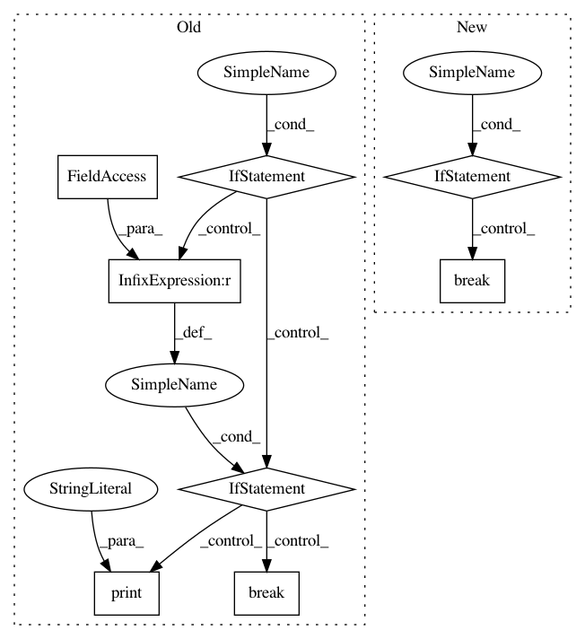

1e0dc41ed1a7346076f32741323049b631f93e6e,talos/scan/scan_run.py,,scan_run,#Any#,9
Before Change
while len(self.param_log) != 0:
self = scan_round(self)
self.pbar.update(1)
if self.time_limit is not None:
if datetime.now() > self._stoptime:
print("Time limit reached, experiment finished")
break
self.pbar.close()
// save the results
self = result_todf(self)
After Change
while True:
self.round_params = self.param_object.round_parameters()
// break when there is no more permutations left
if self.round_params is False:
break
// otherwise proceed with next permutation
from .scan_round import scan_round
self = scan_round(self)
self.pbar.update(1)
In pattern: SUPERPATTERN
Frequency: 3
Non-data size: 8
Instances
Project Name: autonomio/talos
Commit Name: 1e0dc41ed1a7346076f32741323049b631f93e6e
Time: 2019-03-07
Author: mailme@mikkokotila.com
File Name: talos/scan/scan_run.py
Class Name:
Method Name: scan_run
Project Name: streamlit/streamlit
Commit Name: d6b3aa9668d0211b8439fa8057b5295c1ab11f23
Time: 2018-05-21
Author: armando@playground.global
File Name: lib/streamlit/Proxy.py
Class Name: Proxy
Method Name: _client_ws_handler
Project Name: streamlit/streamlit
Commit Name: 4e1a728f3a7af1f1db1b8265f208cc34880bf17e
Time: 2018-05-18
Author: armando@playground.global
File Name: lib/streamlit/Proxy.py
Class Name: Proxy
Method Name: _client_ws_handler